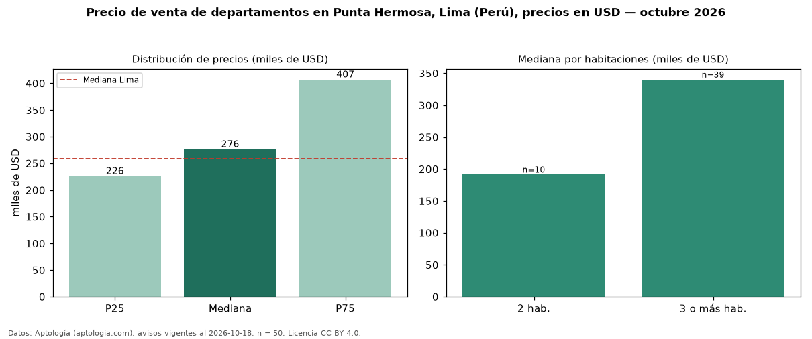

Precio de venta de departamentos en Punta Hermosa, Lima (Perú), precios en USD — octubre 2026
En Punta Hermosa, Lima (Perú), la mediana de precio de venta de departamentos es USD 276.450, según 50 avisos vigentes. Eso es 7 % por encima de la mediana de Lima para departamentos (USD 258.023). Por metro cuadrado, la mediana es USD 2.119/m² (n = 49 avisos con área), 8 % por debajo de Lima (USD 2.305/m²). El área mediana anunciada es 137 m². El segmento con más oferta es el de 3 o más habitaciones (39 avisos, mediana USD 340.000); pasar de 2 habitaciones a 3 o más habitaciones cambia la mediana +78 %. Por precio mediano es el puesto 5 de 18 distritos de Lima con al menos 30 avisos de departamentos en venta (USD): en la franja media. La mitad central de los avisos va de USD 226.163 a USD 407.000 (razón 1,8), una dispersión moderada. Datos: Aptología (aptologia.com), CC BY 4.0 — https://www.aptologia.com/pe/venta/lima. Archivos: PDF, CSV con las cifras y gráfica PNG.

| Avisos únicos | 50 |
|---|---|
| Percentil 25 | COP 226.162 |
| Mediana | COP 276.450 |
| Percentil 75 | COP 407.000 |
| Mediana por m² | COP 2.118 |
Fuente: avisos vigentes de portales inmobiliarios recopilados por Aptología, deduplicados (mínimo 30 avisos únicos por celda). Precios pedidos, no cerrados. Fecha: 2026-10-18.